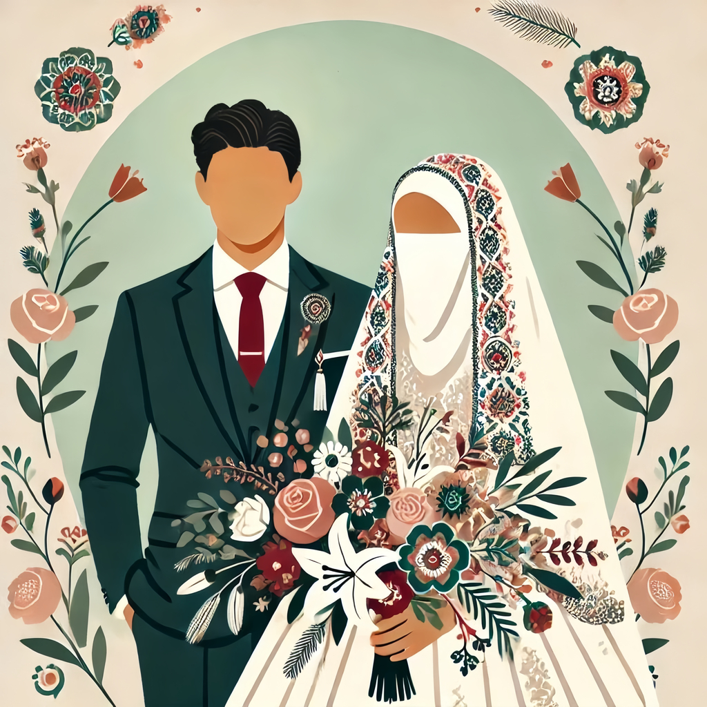
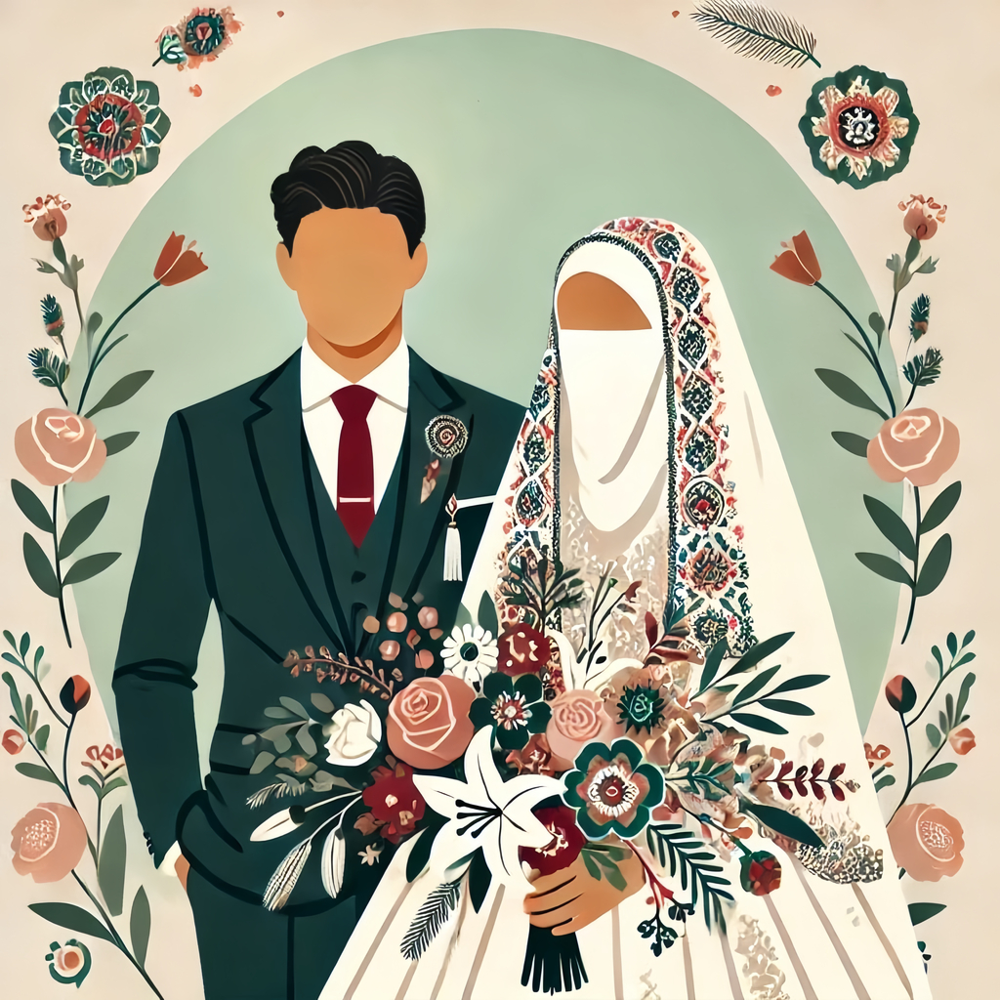

Вы приглашены на наш никах!
Арслан & Гульназ
Время: 17:00
Место: Мечеть в деревне Старомунасипово
Дата: 7 Февраля
«И из Его знамений то, что Он сотворил для вас из вас самих супруг, чтобы вы находили покой в них, и установил между вами любовь и милосердие.»
— Священный Коран, Сура 30:21
Арслан & Гульназ
Время: 17:00
Место: Мечеть в деревне Старомунасипово
Дата: 7 Февраля
